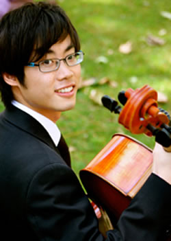

Born in Kobe, Japan, Yoshika Masuda first started to play the cello at the age of five. Following studies with George Pedersen in Australia, he went onto study at the Royal Northern College of Music in Manchester on a full scholarship. Yoshika was recently awarded first prize at both the Australian Concerto & Vocal Competition and the YMF National Debut Concerto Competition, and is also the winner of the Yamaha Music Foundation of Europe String Award. He has also won top prizes at the Sydney Cello Award, Australian National Youth Concerto Competition and the J A Beare International Solo Bach Competition. Yoshika has performed concertos and recitals throughout Australia, Austria, France, Italy, Japan, the UK and USA.
Yoshika gained his Bachelor of Music with first class honours from the RNCM, receiving both the Sir John Munduell Principals’s Prize and the Leonard Rose Cello Award for outstanding achievement. He also completed his Master of Music at the RNCM with distinction the following year.
Yoshika is currently continuing his studies in Los Angeles as a Doctorate student. Yoshika’s cello is a fine Carl Becker model (1930), loaned to him from a private foundation.
Copyright Barrier Reef Orchestra, 2017. All rights reserved.